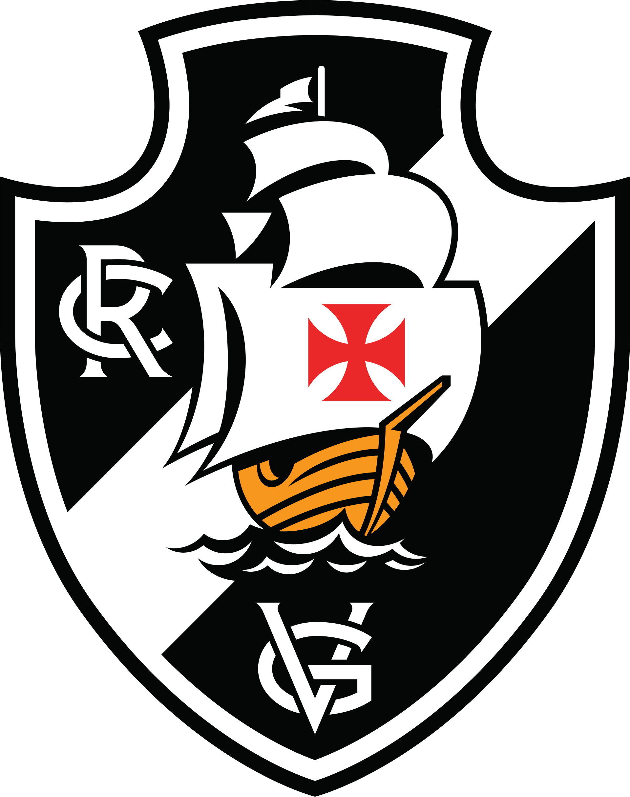
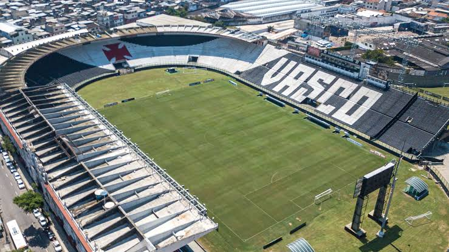

Bem-vindo ao site do Vasco!
O Club de Regatas Vasco da Gama é um dos clubes mais tradicionais do futebol brasileiro. Sua história é marcada por grandes conquistas e pela luta contra a discriminação.

Conheça o Vasco
O Vasco foi fundado em . O clube começou suas atividades no remo e posteriormente se destacou também no futebol. Sua história é muito importante para o esporte brasileiro.
Algumas características do clube
- Cores tradicionais: preto e branco.
- Mascote: Almirante.
- Estádio: São Januário.
- Apelido: Gigante da Colina.
Momentos importantes
- Fundação do clube em 1898.
- Início das atividades no remo.
- Entrada no futebol.
- Conquistas nacionais e internacionais.
Modalidades esportivas
- Esportes tradicionais:
- Remo
- Futebol
- Outras modalidades esportivas.
São Januário
São Januário é o estádio histórico do Vasco, localizado no Rio de Janeiro.

Conheça mais sobre o Gigante da Colina:
Conheça mais sobre a história e curiosidades do Vasco.
Confira os dados e títulos do clube.
Faça seu cadastro na página de cadastro de torcedores.
Elenco do Vasco
Ver elenco completo
Goleiros
| Posição | Nome |
|---|---|
| GOL | Léo Jardim |
| GOL | Daniel Fuzato |
| GOL | Pablo |
Defesa
| Posição | Nome |
|---|---|
| LD | Puma Rodríguez |
| ZAG | Alan Saldivia |
| LE | Lucas Piton |
| ZAG | Paulinho |
| ZAG | Robert Renan |
| ZAG | Lucas Freitas |
| ZAG | Carlos Cuesta |
| ZAG | Gabriel Pereira |
| ZAG | João Mutano |
| ZAG | Walace Falcão |
| LE | Cuiabano |
| LD | Paulo Henrique |
Meio-campo
| Posição | Nome |
|---|---|
| VOL | Tchê Tchê |
| VOL | Santiago Sosa |
| MC | Jair |
| MEI | Johan Rojas |
| MEI | Guilherme Estrella |
| VOL | Alan Lescano |
| MC | Thiago Mendes |
| MC | Euder |
| MC | Ramon Rique |
| VOL | Mateus Carvalho |
| VOL | Cauan Barros |
Ataque
| Posição | Nome |
|---|---|
| PE | David |
| ATA | Facundo Colidio |
| PD | Andrés Gómez |
| PE | Nuno Moreira |
| PD | Marino Hinestroza |
| ATA | Bruno Duarte |
| ATA | Brenner |
| PD | Adson |
| PE | Loide Augusto |
| ATA | Claudio Spinelli |
Comissão técnica
| Função | Nome |
|---|---|
| Técnico | Pedro Emanuel |